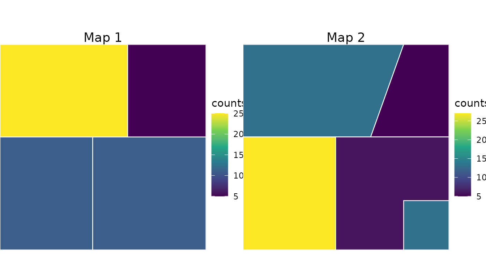
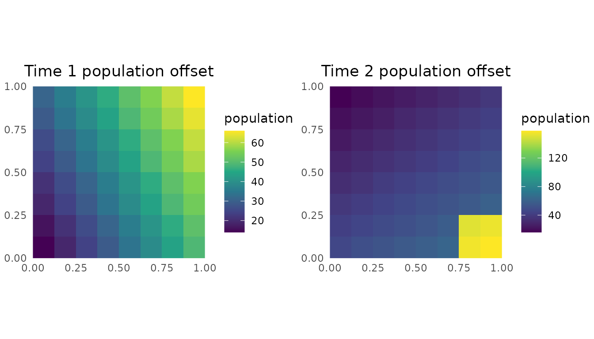
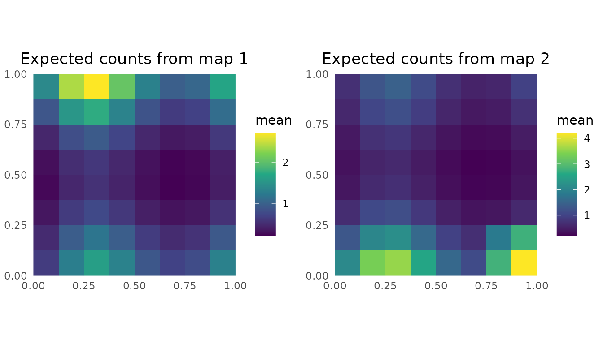

Disaggregation With Multiple Maps
Source:vignettes/multiple-maps-schematic.Rmd
multiple-maps-schematic.RmdThis vignette builds a small synthetic example of how to use the
DAST package. Two sets of hypothetical administrative
regions cover the same domain, but the boundaries differ. We simulate
time-varying fine-scale population offsets and counts, aggregate those
counts to each map, and then use DAST to infer a fine-scale
risk surface from the two areal observations.
Construct simulated maps
make_rect <- function(xmin, ymin, xmax, ymax) {
st_polygon(list(matrix(
c(
xmin, ymin,
xmax, ymin,
xmax, ymax,
xmin, ymax,
xmin, ymin
),
ncol = 2,
byrow = TRUE
)))
}
make_poly <- function(coords) {
st_polygon(list(rbind(coords, coords[1, ])))
}
make_sf <- function(ids, geometries) {
st_sf(
area_id = ids,
geometry = st_sfc(geometries, crs = 3857)
)
}
map_1 <- make_sf(
ids = paste0("S1", 1:4),
geometries = list(
make_rect(0.00, 0.00, 0.45, 0.55),
make_rect(0.45, 0.00, 1.00, 0.55),
make_rect(0.00, 0.55, 0.62, 1.00),
make_rect(0.62, 0.55, 1.00, 1.00)
)
)
map_2 <- make_sf(
ids = paste0("S2", 1:5),
geometries = list(
make_poly(matrix(
c(
0.00, 0.55,
0.62, 0.55,
0.78, 1.00,
0.00, 1.00
),
ncol = 2,
byrow = TRUE
)),
make_poly(matrix(
c(
0.62, 0.55,
1.00, 0.55,
1.00, 1.00,
0.78, 1.00
),
ncol = 2,
byrow = TRUE
)),
make_poly(matrix(
c(
0.45, 0.00,
0.45, 0.55,
0.00, 0.55,
0.00, 0.00
),
ncol = 2,
byrow = TRUE
)),
make_poly(matrix(
c(
0.45, 0.00,
0.78, 0.00,
0.78, 0.24,
1.00, 0.24,
1.00, 0.55,
0.45, 0.55
),
ncol = 2,
byrow = TRUE
)),
make_poly(matrix(
c(
0.78, 0.00,
1.00, 0.00,
1.00, 0.24,
0.78, 0.24
),
ncol = 2,
byrow = TRUE
))
)
)Simulate populations and counts
The aggregation rasters are simulated population offsets. The second time point has a higher-density pocket in the bottom-right polygon introduced by the second map. Counts are simulated on the same fine grid from a negative-binomial model, then summed into each polygon support.
set.seed(1)
template <- rast(
ncol = 8,
nrow = 8,
xmin = 0,
xmax = 1,
ymin = 0,
ymax = 1,
crs = "EPSG:3857"
)
xy <- xyFromCell(template, seq_len(ncell(template)))
population_1 <- template
values(population_1) <- pmax(1, round(10 + 40 * xy[, 1] + 20 * xy[, 2]))
names(population_1) <- "population"
bottom_right_hotspot <- xy[, 1] >= 0.78 & xy[, 2] <= 0.24
population_2 <- template
values(population_2) <- pmax(
1,
round(12 + 25 * xy[, 1] + 35 * (1 - xy[, 2]) + 90 * bottom_right_hotspot)
)
names(population_2) <- "population"
risk <- template
values(risk) <- as.numeric(scale(
sin(2 * pi * xy[, 1]) + cos(2 * pi * xy[, 2])
))
names(risk) <- "risk"
mean_counts_1 <- values(population_1) * exp(-4 + 0.8 * values(risk))
mean_counts_2 <- values(population_2) * exp(-4 + 0.8 * values(risk))
fine_counts_1 <- template
values(fine_counts_1) <- rnbinom(ncell(template), size = 8, mu = mean_counts_1)
names(fine_counts_1) <- "counts"
fine_counts_2 <- template
values(fine_counts_2) <- rnbinom(ncell(template), size = 8, mu = mean_counts_2)
names(fine_counts_2) <- "counts"
map_1$response <- as.integer(
extract(fine_counts_1, vect(map_1), fun = sum, na.rm = TRUE)[[2]]
)
map_2$response <- as.integer(
extract(fine_counts_2, vect(map_2), fun = sum, na.rm = TRUE)[[2]]
)
plot_polygon_counts <- function(x, title) {
ggplot(x) +
geom_sf(aes(fill = response), color = "white", linewidth = 0.4) +
scale_fill_viridis_c(name = "counts") +
coord_sf(expand = FALSE) +
labs(title = title) +
theme_void() +
theme(
legend.position = "right",
plot.title = element_text(hjust = 0.5)
)
}
cowplot::plot_grid(
plot_polygon_counts(map_1, "Map 1"),
plot_polygon_counts(map_2, "Map 2"),
nrow = 1
)
plot_raster <- function(x, title, fill = names(x)[1]) {
df <- as.data.frame(x, xy = TRUE, na.rm = FALSE)
names(df)[3] <- "value"
ggplot(df, aes(x = x, y = y, fill = value)) +
geom_raster() +
scale_fill_viridis_c(name = fill) +
coord_equal(expand = FALSE) +
labs(title = title, x = NULL, y = NULL) +
theme_minimal() +
theme(plot.title = element_text(hjust = 0.5))
}
cowplot::plot_grid(
plot_raster(population_1, "Time 1 population offset", "population"),
plot_raster(population_2, "Time 2 population offset", "population"),
nrow = 1
)
Prepare and fit the model
The package workflow starts by combining the areal responses,
covariate raster, and aggregation raster into a
disag_data_mmap object.
schematic_data <- prepare_data_mmap(
polygon_shapefile_list = list(map_1, map_2),
covariate_rasters_list = list(risk, risk),
aggregation_rasters_list = list(population_1, population_2),
mesh_args = list(max.edge = c(0.5, 1), cutoff = 0.1)
)
schematic_data
#> Disaggregation data (multi-map) info
#> =====================================
#> Time points: 2
#> Total polygons: 9
#> Total pixels: 128
#>
#> Use `summary(...)` for more details.We fit a small negative-binomial model with AGHQ. The example keeps the mesh coarse and uses one quadrature point so the vignette remains lightweight.
fit <- disag_model_mmap(
schematic_data,
family = "negbinomial",
engine = "AGHQ",
engine.args = list(aghq_k = 1, optimizer = "nlminb")
)
summary(fit)
#> There are 55 random effects, but max_print = 30, so not computing their summary information.
#> Set max_print higher than 55 if you would like to summarize the random effects.
#> Summary of disaggregation model (multi-map) fit with AGHQ
#> =======================================================
#> Family: negbinomial
#> Link function: log
#> Spatial field included: Yes
#> IID effects included: Yes
#> Betas as fixed effects: Yes
#> Quadrature Points: 1
#>
#> Parameter estimates:
#> ------------------
#> AGHQ on a 5 dimensional posterior with 1 1 1 1 1 quadrature points
#>
#> The posterior mode is: -4.037586 0.7223764 -3.85663 -2.477922 -0.2630212
#>
#> The log of the normalizing constant/marginal likelihood is: -29.35156
#>
#> The covariance matrix used for the quadrature is...
#> [,1] [,2] [,3] [,4] [,5]
#> [1,] 0.0206686936 -1.313785e-02 0.0001812959 -0.008217570 2.212676e-03
#> [2,] -0.0131378488 2.545940e-02 -0.0010685350 -0.004978157 3.474949e-05
#> [3,] 0.0001812958 -1.068535e-03 0.9743867659 0.004511496 7.805067e-04
#> [4,] -0.0082175712 -4.978155e-03 0.0045115072 0.869272343 -2.923759e-01
#> [5,] 0.0022126785 3.474663e-05 0.0007804811 -0.292375916 7.153993e-01
#>
#> Here are some moments and quantiles for the transformed parameter:
#>
#> mean sd 2.5% median 97.5%
#> intercept -4.0375860 5.329071e-15 -4.0375860 -4.0375860 -4.0375860
#> risk 0.7223764 9.992007e-16 0.7223764 0.7223764 0.7223764
#> iideffect_log_tau -3.8566301 5.329071e-15 -3.8566301 -3.8566301 -3.8566301
#> log_sigma -2.4779224 3.552714e-15 -2.4779224 -2.4779224 -2.4779224
#> log_rho -0.2630212 3.330669e-16 -0.2630212 -0.2630212 -0.2630212Predict on the fine grid
The model prediction contains one fine-scale rate raster for each map/time point. Because the population offset enters the aggregation likelihood, not the returned rate surface, we multiply each rate raster by the matching population raster to visualize expected fine-cell counts.
pred <- predict(fit, N = 10)
prediction_rasters <- pred$mean_prediction$prediction
expected_counts_1 <- prediction_rasters[["time_1"]] * population_1
expected_counts_2 <- prediction_rasters[["time_2"]] * population_2
cowplot::plot_grid(
plot_raster(expected_counts_1, "Expected counts from map 1", "mean"),
plot_raster(expected_counts_2, "Expected counts from map 2", "mean"),
nrow = 1
)
This toy example is intentionally small, but it shows the main structure: multiple areal maps, a population offset raster, optional covariates, model fitting, and fine-grid prediction all pass through the same multi-map interface.